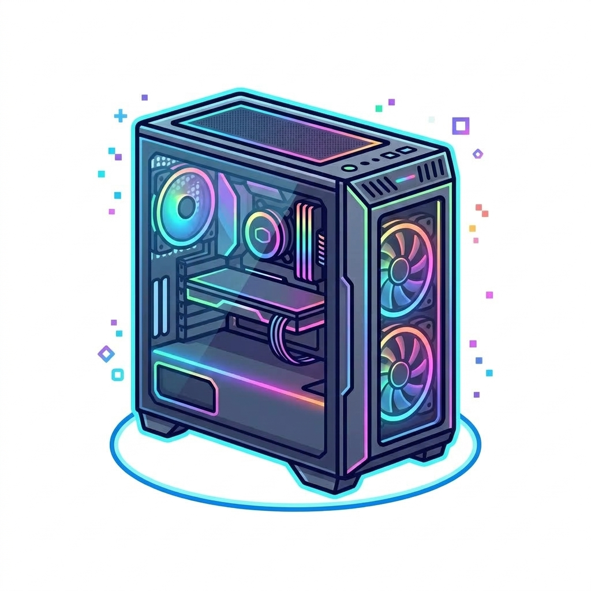
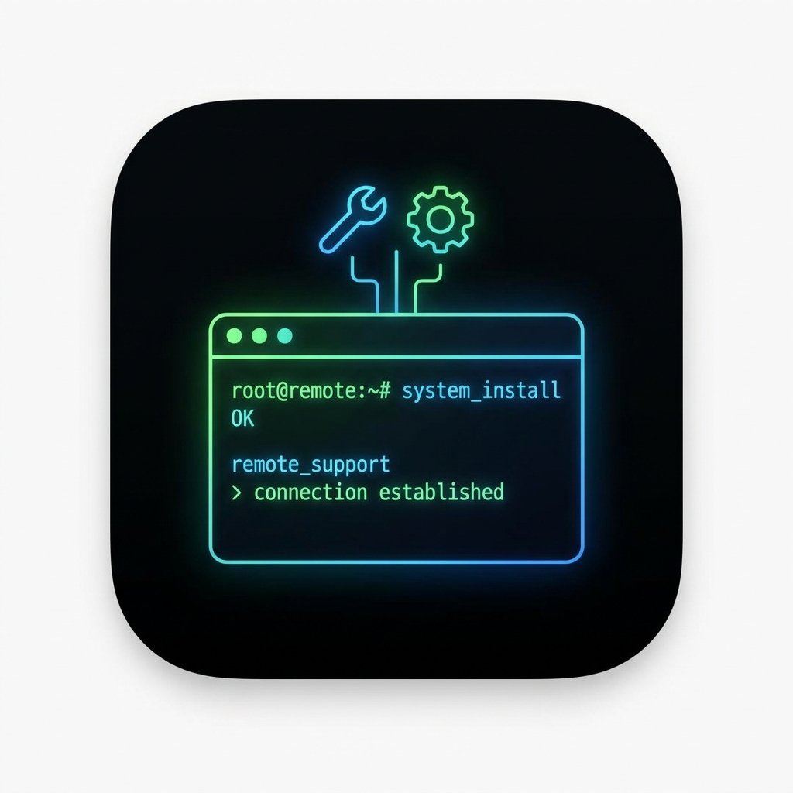
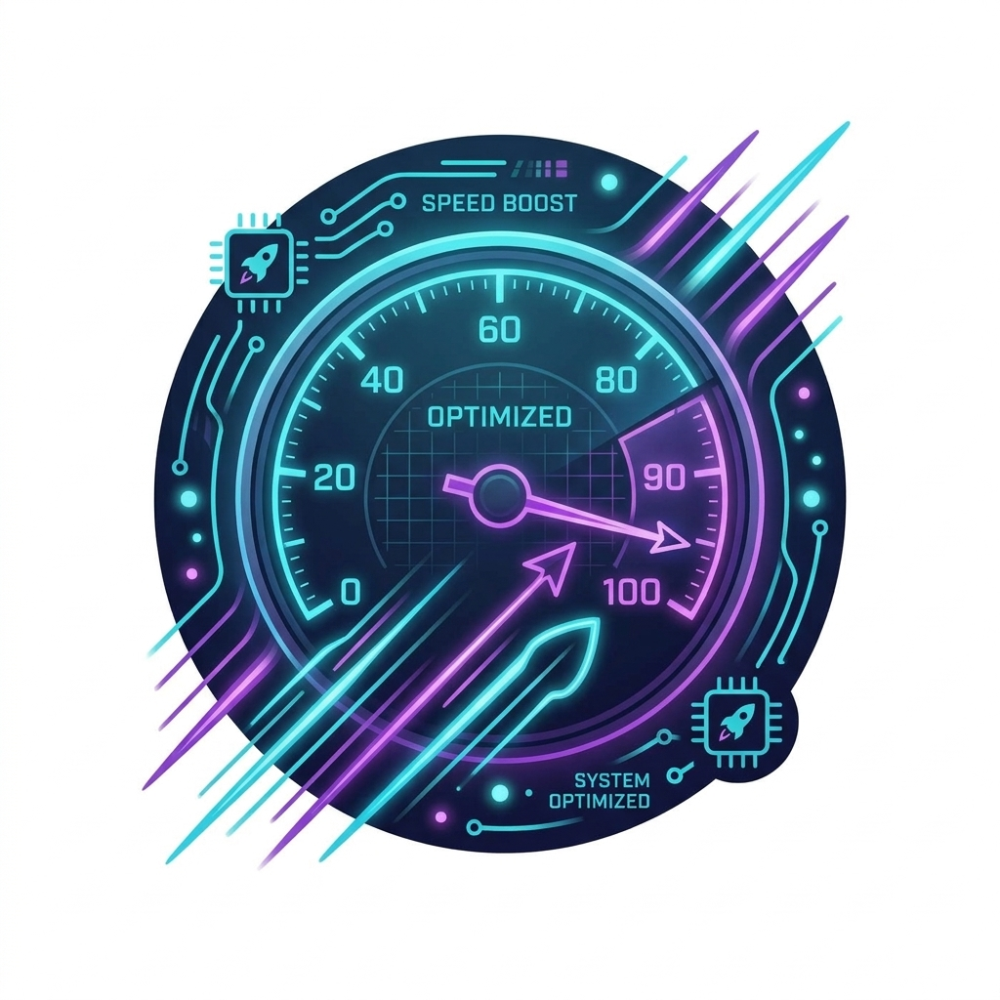

Setups sob medida para jogos e design gráfico, suporte remoto, otimização de sistemas e criação de sites e planilhas inteligentes.
WhatsApp Gabriel Oliveira 📱
Montagem de computadores sob medida para jogos (PC Gamer) ou estações de trabalho de alta performance para designers gráficos, com seleção das melhores peças e foco no melhor custo-benefício.

Suporte remoto especializado para instalação, restauração e configuração de sistemas operacionais e softwares essenciais.
Instalação e apoio técnico no pacote completo (Word, Excel, PowerPoint, Outlook) para uso corporativo ou pessoal.

Limpeza de sistema, remoção de arquivos desnecessários e ajustes para acelerar a velocidade do seu computador.
📥 Baixar CCleanerDesenvolvimento de landing pages, portfólios e sites institucionais modernos, responsivos e otimizados.
Criação de planilhas personalizadas em Excel, automações, dashboards dinâmicos e controle financeiro ou de estoque para o seu negócio.